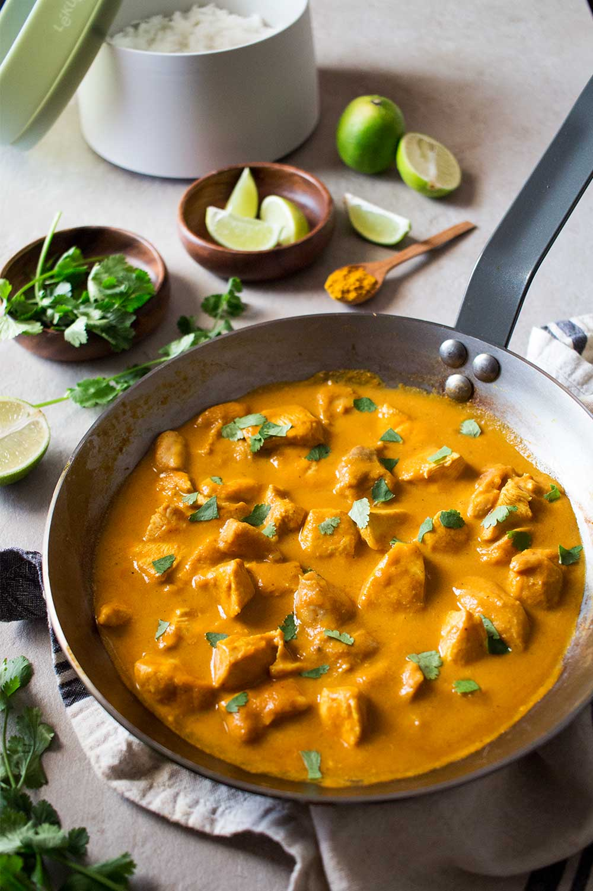

Pollo al Curry

Description
Chicken breasts marinated with curry powder and cooked inside double-cream sauce. Usually accompanied by a serving of rice.
Ingredients
- 2 Chicken breasts
- 1 Cup of double cream
- 1/2 Cup of Tomato paste
- 1 Cup of Rice
- Salt
- Pepper
- Onions
- Garlic
- Oil
- Lemon juice
- Rinse the onions,garlic and chicken breasts.
- Cut the chicken breasts into cubes.
- Put the rice in a salted pot for 15-20 minutes until soft.
- Season the cubes with lemon juice, salt, pepper and a minced garlic clove, leave it marinating in the fridge for a few minutes.
- Toss the onions onto an oiled up pan on low heat until they look translucent.
- Add a teaspoon of curry powder and 1/2 cup of tomato paste, leave 5 minutes on low heat.
- Add the chicken breasts cubes and cook for 15 minutes, stir with a wooden spoon every few minutes.
- Take the rice out and strain if there's still water on the pot.
- When the chicken is done, add the double cream and season to your liking, let it cook for another 10-15 minutes.
Done!